Asfaltado de la via Chantaco, Chuquiribamaba y Taquil
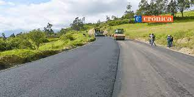
El plazo es de 18 meses y se prevé que concluya en marzo del próximo año. Beneficiarios hablan de utilidades.
El proyecto de asfaltado de la vía Villonaco-Taquil-Chantaco-Chuquiribamba, a cargo de la Constructora Oviedo Palacios (Covipal), tiene un avance del 30% y se prevé que concluya, según el cronograma, en marzo de 2023. La obra tiene un costo que supera los 13’545.000 dólares, incluidos los estudios y fiscalización. Al final, el monto supera los 16 millones de dólares con el primer contrato, según las autoridades.
Parroquia chantaco
Escalinatas El paraíso
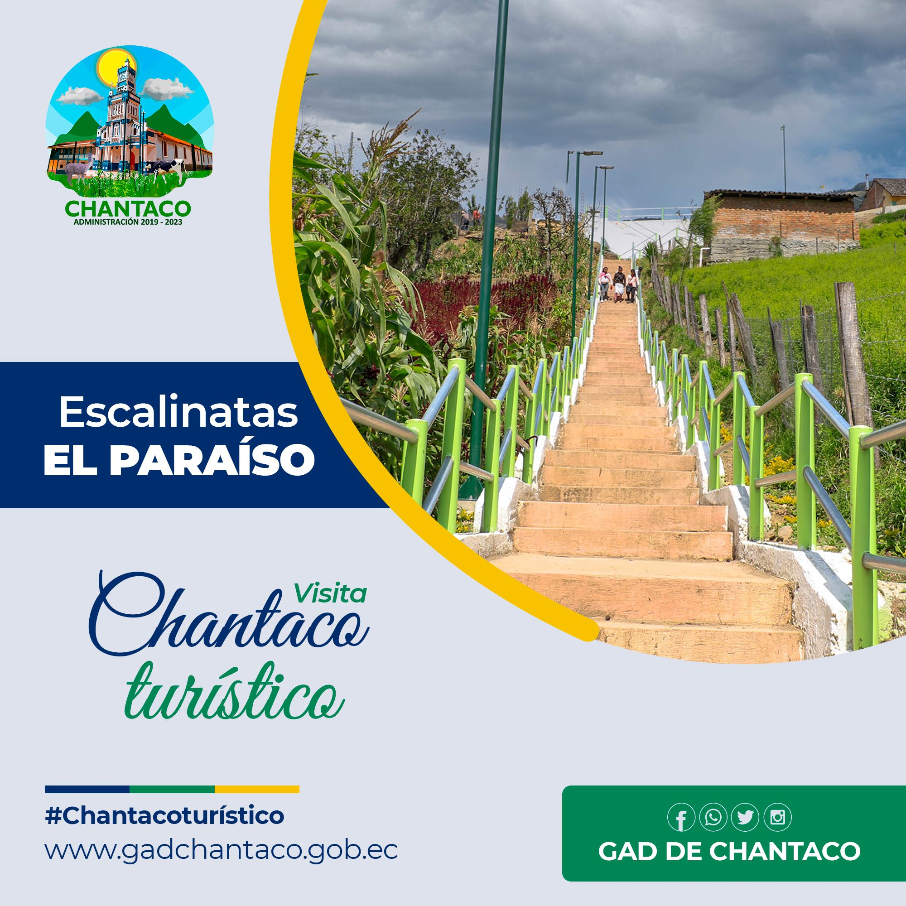
El Municipio de Loja en convenio con el GAD Parroquial de Chantaco construye una escalinata que permite la conexión del centro parroquial con la escuela de la localidad Benjamín Franklin.
Desde noviembre del año pasado el Ayuntamiento a través de la Coordinación de Parroquias ejecuta esta obra que tiene una inversión de 9 mil 930 dólares, de los cuales el GAD Parroquial aporta con siete mil y el Municipio cubre con la contraparte, informa César Guanuche, coordinador de Parroquias.
Parroquia Quinara
Proyecto de agua potable Sahuayco
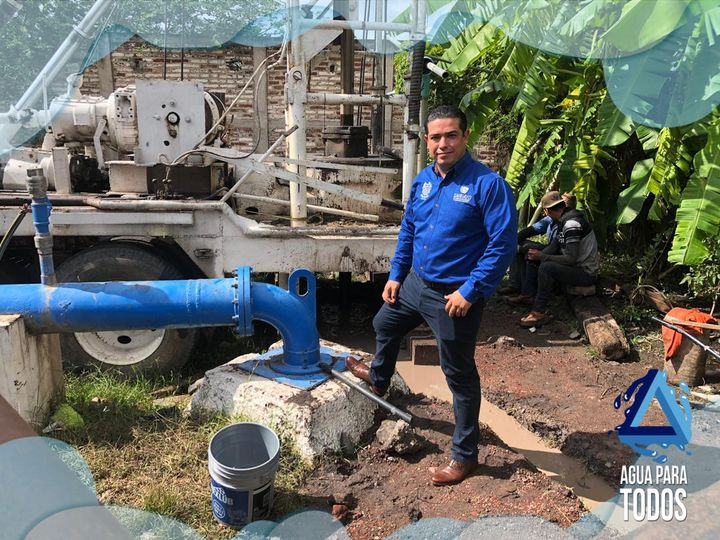
Richard Vaca, subdirector de la Unidad Municipal de Agua Potable y Alcantarillado (UMAPAL), detalla que, en función del presupuesto participativo del 2020, se procedió a elevar al Portal de Compras Públicas la construcción del Sistema de Tratamiento final de Aguas Residuales para la parroquia.
Existen 35 oferentes. Se está validando y calificando la información. Hasta fin de mes se tendrá un ganador, para luego continuar con el proceso, precisa el funcionario Municipal. Para este año también se tiene planificado construir el sistema de alcantarillado sanitario en el sector La Y.
Parroquia el Cisne
Centro comercial el Cisne
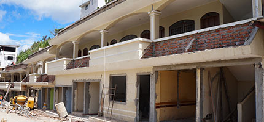
La inversión es 60 mil dólares. En junio se inaugura la obra. La primera etapa albergará a 19 mercaderes.
Un 80% registra el avance de la intervención al Centro Comercial en la parroquia El Cisne. 19 locales, accesos peatonales y obras complementarias se habilitarán en la segunda planta de esta zona de abasto.
El proyecto se construye vía contrato a cargo de Max Rodríguez y mediante fiscalización del técnico Oswaldo Cuadrado de la Gerencia de Obras Públicas del Municipio de Loja.
Para el jefe distrital de la parroquia El Cisne, Vicente Cuenca, el arreglo del nuevo punto de compras dinamizará este sitio localizado antes de las escalinatas hacia la basílica de la Virgen de El Cisne
Parroquia Taquil
Sistema de acantarillado
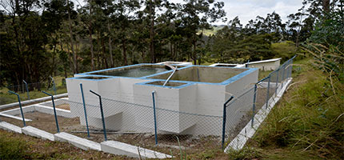
Después de 106 años de vida política la parroquia Taquil, especialmente su cabecera parroquial, cuenta con agua potable. Los moradores están agradecidos por esta obra que la ejecuta el Municipio de Loja y que cambia radicalmente sus condiciones de vida.
“Muy agradecidos con el Municipio por la inversión que realiza para construir el sistema de agua potable”, refiere el presidente de la Junta Parroquial, Rodrigo Patiño. La obra llega a más de 600 usuarios quienes anteriormente estaban propensos a adquirir enfermedades por consumir agua no tratada.
Parroquia Chuquiribamba
Adoquinamiento de la parroquia
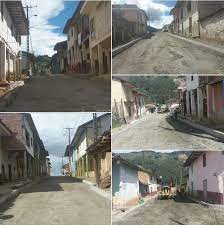
La parroquia Chuquiribamba es atendida, por parte del Municipio de Loja, en varias áreas, una de ellas es el adoquinado de la calle García Moreno del centro parroquial y el apoyo en las áreas productivas.
El adoquinado de la calle incorpora también el cambio de la red de agua potable, acometidas domiciliarias, arreglo de instalaciones de alcantarillado y construcción de bordillos.
En la obra se invierte un monto de 158 mil dólares que corresponde al presupuesto participativo que le corresponde a esta parroquia.
Cesar Guanuche, coordinador de Parroquias, sostiene que en unos dos meses culminarán los trabajos si las condiciones climáticas lo permiten.
Parroquia Vilcabamba
Sistema de alcantarillado en beneficio de Tumianuma
En la parroquia Vilcabamba, esta semana, iniciaron los trabajos de construcción del sistema de alcantarillado sanitario desde la puerta de ingreso a Vilcabamba hasta la planta de tratamiento de aguas residuales del lugar.
Un total de 2400m de tubería se colocará en esta obra y se construirán 45 pozos de revisión en todo el trayecto.
Justo Ortega, contratista y representante del Consorcio OP, expresó que tienen un plazo de cuatro meses para la ejecución de la obra. La inversión total del proyecto es de 209 mil dólares.
Llevan una semana de labores y solicitan la colaboración de la ciudadanía para avanzar con la obra.
Parroquia San Pedro de Vilvacamba
Alcantarillado plivial
En estos proyectos está la conclusión de varios proyectos que se ejecutan desde el año anterior, uno de ellos y quizá el más importante para el barrio central de San Pedro es el alcantarillado pluvial, colector de aguas lluvias y adoquinado de las principales calles de la parroquia.
Rommel Quille, presidente de la Junta Parroquial, destaca que en el 2014 inició la consultoría del alcantarillado pluvial, colector de aguas lluvias y adoquinado, que fue el paso para firmar, posteriormente, el convenio con el Municipio de Loja para hacer realidad este sueño.
El proyecto es muy importante porque las partes más bajas de la parroquia sufrían inundaciones.
Parroquia Malacatos
Construción Sanitarios Básicos
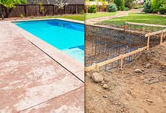
El alcalde de Loja, José Bolívar Castillo, durante su intervención, saludó a Malacatos por un año más de emancipación política y destacó las obras ejecutadas por el Municipio, como el mejoramiento de las paradas de buses en los barrios Tres Leguas y Rumishitana, construcción de servicios sanitarios básicos en barrios que están alrededor del sendero ecológico.
El Burgomaestre precisó el apoyo al párroco para mejorar la basílica del Señor de la Caridad; intervención del mercado central mejorando sus condiciones higiénicas, mantenimiento en el coliseo, construcción de la cubierta para la feria libre. “En todo esto hemos invertido una suma de $72.500”, indicó el Personero Municipal.
Parroquia San lucas
Remodelan fachadade la iglesia y parque central
En la actualidad se trabaja en el parque Central de la parroquia que tiene un avance del 99%. Se estima su inauguración el 18 de marzo, dentro de las fiestas del Pawcar Raymi. Se estima desarrollar una feria de soberanía alimentaria.
“Sería ideal que el parque Central esté listo para el desarrollo de estos eventos considerando que es uno de los puntos más importantes que atrae el turismo”, recalca Ángel Andrade, administrador del Municipio en San Lucas.
El parque cuenta con espacios verdes, zonas de descanso y áreas ornamentales. Se edificó la escultura del pueblo Saraguro, simbolizando la ganadería y cultura.
Parroquia Santiago
Adoquinamineto de las calles
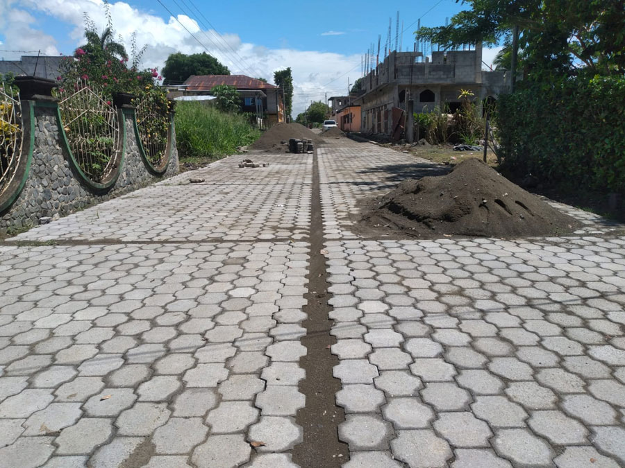
El proyecto de adoquinado de vías en las comunidades y barrios es emprendido por el GAD Parroquial donde se fortalece la movilidad y transportación colectiva.
El objetivo es mejorar la calidad de vida, dinamizar la economía del sector, con la construcción de más espacios de transportación segura se cubren las necesidades de nuevos accesos y conexiones a las diferentes comunidades y barrios de la parroquia. Con la entrega de esta obra transformamos espacios de tierra y lodo por nuevas áreas y accesos viales comunitarias.
Parroquia Jimbilla
Construción del parque de recreaciones
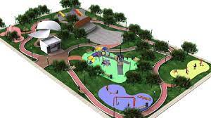
En la parroquia Jimbilla, el Municipio de Loja ejecuta proyectos de inversión en el área productiva y de infraestructura. Actualmente se realiza la Construción del parque de recreaciones .
La cancha se ubica en el barrio Machala y con la cubierta quedará un espacio apropiado para desarrollar actividades deportivas, sociales y culturales, expresa Carmen Jarro, presidenta del Gobierno Parroquial.
Además, indicó que el apoyo del Municipio de Loja ha llegado de diversas formas como es el apoyo en el pintado de la fachada de la iglesia y en lo productivo con proyectos que generan valor agregado a los alimentos que se cultivan en esta zona.
Parroquia Gualel
Adoquinamiento de las calles
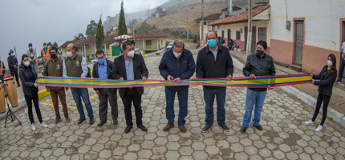
En Gualel se hizo adoquinado y construcción de un puente, que fueron entregados, esta mañana, a la comunidad.
El alcalde Jorge Bailón se trasladó hasta esta parroquia para hacer la inauguración del adoquinado de la calle Alfredo Mora Reyes y un puente en el barrio El Rodeo.
A pesar de la crisis económica la municipalidad hizo esfuerzos por cumplir con obras comprometidas con antelación, las cuales mejoran las condiciones de vida de los beneficiarios.
Manuel Morocho, presidente del barrio El Rodeo, agradeció por la cristalización de la obra, “nos alivia a todos los moradores contar con el puente porque con ello se va un problema de años, que en época invernal con las fuertes lluvias no podíamos cruzar hacia nuestro barrio y teníamos que ubicar troncos de árboles para caminar, con este puente eso queda atrás”.
Además, solicitó que con el presupuesto del siguiente año se concrete la obra de agua potable para todo el barrio, están dispuestos a colaborar a través de mingas.
Presidente de la Parroquia Yangana
Alcantarillado pluvial
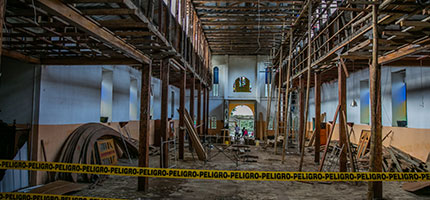
La parroquia Yangana recibe obras municipales que permiten continuar con su desarrollo. En la actualidad se trabaja en la readecuación integral del mercado que dará un espacio adecuado para los comerciantes y la gente que adquiere esos productos.
Por ser una zona ganadera se construye una planta de lácteos, la obra tiene un avance del 40% y está dentro de los plazos establecidos dice Alcívar Saca, coordinador de Parroquias Rurales.
En el centro parroquial de Yangana también se trabaja en el alcantarillado pluvial, en la quebrada de Surunguche se edifican muros que se estima culminar en dos semanas más, y se colabora en la intervención de la iglesia: cubierta, ventanales y reforzamiento de la infraestructura que tiene un avance del 70%.
En el barrio Masanamaca se retomó la construcción de las baterías sanitarias que se paralizó para adoptar algunos ajustes, enfatiza Alcívar Saca.